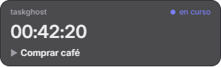
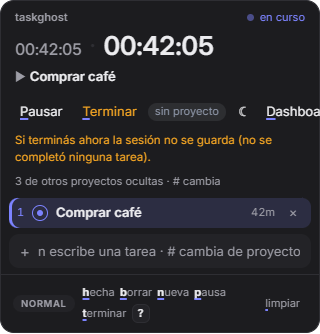
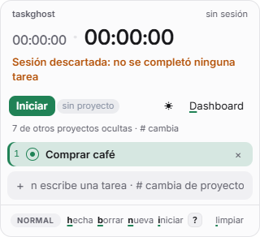
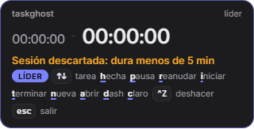
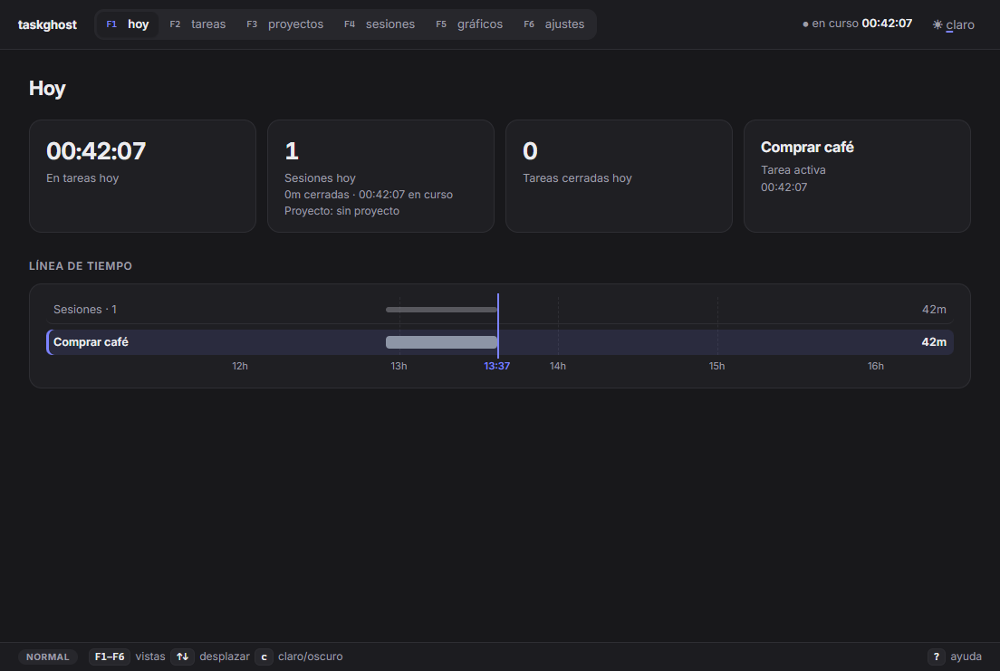
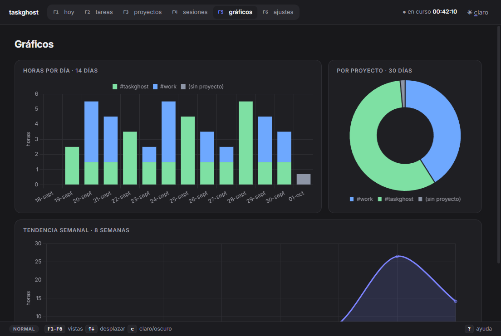
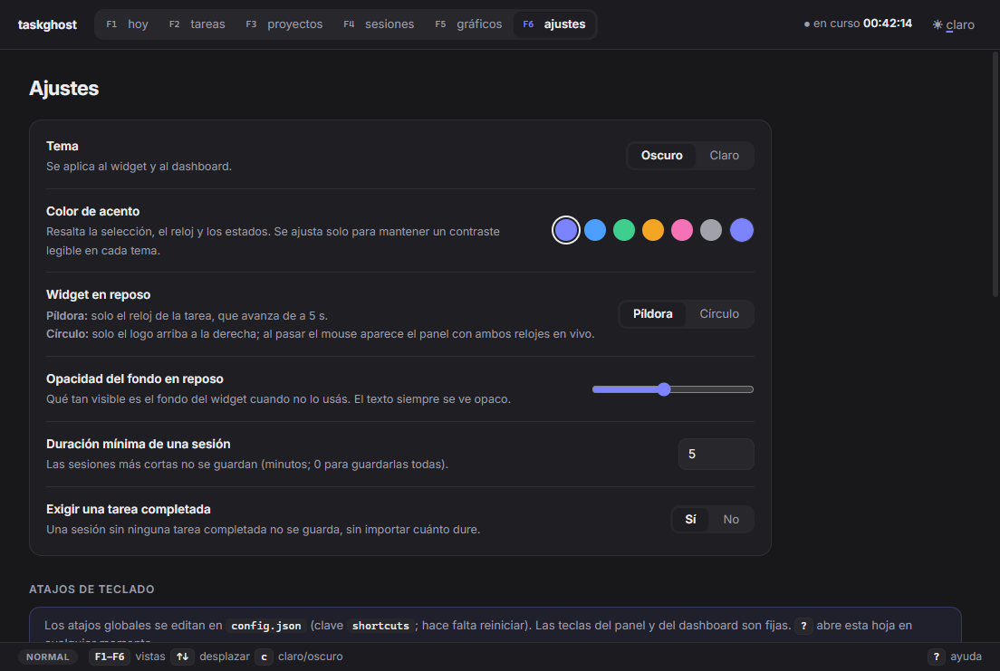

Cómo hacer que taskghost se sienta un producto de Apple.
Revisé el widget y el dashboard (30 capturas del modo smoke), leí la documentación de diseño de Apple (HIG, Liquid Glass, tipografía, springs) y verifiqué qué se puede hacer en Electron 44 sobre Windows. El veredicto: la base ya es limpia, pero hoy se ve plana y web, no física y nativa. Lo que la acerca a Apple no es un color ni una fuente. Es la suma de material, jerarquía tipográfica, geometría concéntrica y movimiento con física.
Hallazgos
21
3 son bugs visibles: botón cortado, swatch duplicado y una curva del gráfico que dibuja un pico que no existe.
Mejoras propuestas
22
Agrupadas en 6 frentes. Cada una explica en qué consiste, qué busca y cómo hacerla paso a paso.
Esfuerzo total estimado
8–11días
En 6 fases. Las fases 1 y 2 (≈3 días) ya cambian la percepción por completo.
Qué hace que algo “se sienta Apple”
Los tres principios clásicos de la HIG (claridad, deferencia y profundidad) bajados a reglas que se pueden aplicar en el código de taskghost.
Deferencia: la interfaz no compite con el contenido
Un solo color de acción, el acento, y solo en lo accionable o lo vivo. Sin bordes gruesos, sin mayúsculas gritonas ni subrayados de color por todos lados. Los textos secundarios bajan de jerarquía con transparencia (label 2/3/4), no con otro gris inventado.
Profundidad: capas con material, no cajas con borde
Apple separa una capa funcional que flota (controles, navegación, el widget) de la capa de contenido. La que flota tiene material: translucidez, un borde especular arriba y una sombra que la despega del fondo. Nunca se apila vidrio sobre vidrio.
Claridad: tipografía con escala, peso y tracking
Pocos tamaños con roles fijos (Large Title, Headline, Body, Caption). El tracking se ajusta según el tamaño: más apretado en lo grande y más abierto en lo chico. Los números van tabulares y los tiempos se escriben como los escribe una persona (“42 min”, no “00:42:00”).
Movimiento con física y con propósito
Springs definidos por duración y rebote. Las animaciones se pueden interrumpir y conservan la velocidad. Las formas se transforman en vez de aparecer de golpe. Lo que pasa cien veces por día no se anima (mover la selección con las flechas). Lo que pasa pocas veces (completar una tarea) se festeja.
Restricciones reales (Windows + Electron 44)
Antes de proponer, verifiqué qué se puede hacer de verdad. Varias ideas “obvias” no se pueden aplicar tal cual.
TemaQué implicaEstado
1SF Pro no se puede usarSu licencia la limita a maquetas y apps para plataformas Apple. Se queda Inter (OFL), que ya está empaquetada con eje óptico. Es la alternativa correcta y la tipografía que más se le parece.Se queda
2SF Symbols tampocoMisma restricción. Se usa un set SVG propio dibujado con la gramática de SF: trazo de 1,5 px, terminaciones redondeadas y glifos rellenos para lo activo (ver M9). Lucide (ISC) sirve como punto de partida.M9
3backdrop-filter no desenfoca el escritorioEn una ventana transparente solo desenfoca el contenido de la propia página. El “vidrio” del widget tiene que ser material simulado (gradiente, borde especular, sombra) o un material real de DWM.M4
4Mica / Acrylic de WindowsElectron tiene backgroundMaterial desde Windows 11 22H2. Para el dashboard (ventana con foco y duradera) Mica es ideal. Para el widget es dudoso: nunca toma foco y DWM suele pintar el color sólido de reserva en ventanas inactivas. También fuerza las esquinas de 8 px de Windows. Hay que hacer una prueba corta (spike) antes de decidir.M5
5Squircles nativosElectron 44 trae Chromium 152, que soporta corner-shape: superellipse() desde la versión 139. Las esquinas continuas tipo Apple salen con CSS, sin SVG.M3
6Springs en CSSlinear() permite muestrear un spring real (duración + rebote, el modelo de Apple) sin JS en tiempo de ejecución. En esta página ya generé tres: smooth, snappy y bouncy.M19
7Sombra del widgetLa ventana mide exactamente 320 px y es transparente, así que cualquier sombra exterior se recorta. Para que el widget “flote” hay que darle a la ventana un margen transparente.M6
8Render de fuentes en WindowsClearType y DirectWrite dibujan más fino que macOS, y -webkit-font-smoothing no hace nada en Windows. Inter es variable: subir el cuerpo a peso 450 compensa y le da la densidad del texto de Mac.M7
Auditoría: estado actual
Capturas reales del modo smoke y, abajo, cada hallazgo con por qué no se siente Apple y qué mejora lo resuelve. alto · medio · bajo.

Reposo (píldora): una caja plana con borde gris.

Panel: “Dashboard” cortado, aviso naranja en el medio, barra de pistas cargada.

Claro + verde: el ajuste de contraste deja el botón verde musgo.

Líder: leyenda densa, todas las letras con subrayado de color.

Hoy: 4 tarjetas con el mismo peso visual y media pantalla vacía.Tareas: encabezados en MAYÚSCULAS, checkboxes y selects nativos, acciones siempre visibles.

Gráficos: Chart.js por defecto, con grilla completa, etiquetas a 45° y una curva que inventa un pico.

Ajustes: la mejor pantalla. Falta un switch en lugar de “Sí/No” y sobra un índigo repetido al final.
#HallazgoPor qué no se siente AppleMejora
1El botón “Dashboard” se corta en la barra del panelEl texto se sale del ancho de 320 px. Un producto premium no tiene ni un píxel fuera de lugar.M10
2Píldora y panel son dos cajas pegadas, con borde gris de 1 pxSe nota la costura. No hay material ni profundidad, y el widget no parece un objeto que flota sobre el escritorio.M4M6
3Ninguna transición entre reposo y panelLa ventana cambia de alto de golpe. En Apple las superficies se transforman, como la Dynamic Island.M20
4Glifos Unicode: ▶ ☾ ☀ ✕ ↑ ↓ ·Cada uno trae su propio peso, tamaño y línea base según la fuente de reserva. Apple usa símbolos que acompañan el peso del texto.M9
5Subrayados en acento, de 1,5 px y en negrita, en cada pistaDecenas de marcas de color compiten con el contenido. Rompe la deferencia.M12
6Selección con barra izquierda de 3 px y tinteEs el idioma de VS Code y Material. En macOS la fila seleccionada es un rectángulo redondeado relleno de acento con texto blanco, y gris cuando la lista no tiene foco.M11
7Reloj “00:42:05 · 00:42:05”Ceros a la izquierda que no informan nada, dos relojes casi iguales y un separador “·” casi invisible. El Reloj de Apple muestra “42:05”.M8
8Aviso de sesión descartada: un párrafo naranja en el medio del panelApple usa un aviso compacto con ícono y fondo teñido, o un HUD efímero.M14
9Acento oscurecido en los rellenos (verde musgo en claro)El ajuste de contraste está pensado para texto y se aplica también al fondo de los botones. Apple usa el color de sistema vivo como relleno, con texto blanco.M2
10Barra de título nativa de Windows sobre el dashboardLas apps de Mac unifican la barra de título con la toolbar. Hoy hay dos bandas: la del sistema y la de la app.M5
11Navegación arriba con F1–F6 dentro de cada pestaña y etiquetas en minúsculaLas apps de Mac de este tipo (Things, Recordatorios, Música) usan una barra lateral con íconos de color. Los atajos se muestran alineados a la derecha y en tono terciario, como en los menús.M15
12Encabezados en MAYÚSCULAS con tracking (LÍNEA DE TIEMPO, TAREA…)Es un estilo web de 2015. macOS usa títulos de sección en minúscula, semibold y del color del texto.M7
13“Hoy”: 4 tarjetas con el mismo peso y media pantalla vacíaNo hay jerarquía ni un dato protagonista. Fitness y Tiempo en pantalla resuelven esto con un número héroe y un anillo.M16
14Tabla de tareas: checkbox cuadrado nativo y botones ▶↑↓✕ siempre visiblesMucho ruido en cada fila. En Apple, las acciones aparecen al pasar el mouse o con la selección, y los checks son círculos.M18
15Selects y slider nativos de WindowsRompen la ilusión: son el único control con estética de Windows.M13
16Gráficos de Chart.js por defecto, con una curva que inventa un picoGrilla completa, etiquetas a 45°, barras cuadradas y una dona gruesa con borde. El suavizado (tension) dibuja valores que no existen.M17
17“Sí/No” como control segmentado y un índigo repetido entre los swatchesEn Apple, un booleano es un switch. El selector propio se ve igual que el primer preset y confunde.M13
18Completar, borrar y reordenar no tienen transiciónLas filas saltan. Se pierde el momento de satisfacción de cerrar una tarea, que en Recordatorios es lo mejor de la app.M21
19Ícono: buena personalidad, ejecución de 2015Ocupa todo el lienzo, sin aire ni retícula. Los anteojos se pierden a 16 px en la bandeja. El widget mete el PNG entero en un círculo.M22
20Espaciados irregulares y radios no concéntricosPaddings de 9/14/10, 7/10, 5/8 y 3/9 px. Radios de 14 (tarjeta), 9 (fila), 10 (input) y 8 (botón) sin relación entre sí. Apple usa una retícula de 4 pt y esquinas concéntricas.M1M3
21Neutros “zinc” con un tinte azul y grises inventados por componenteApple usa grises neutros y jerarquía con alpha (label/secondary/tertiary), que además funciona sobre materiales.M1
Mejoras
Cada mejora dice en qué consiste, qué se busca y cómo hacerla paso a paso, con los archivos que toca. Las marcadas confirmar cambian algo que hoy decidiste vos (alcance o comportamiento), así que no se hacen sin tu ok.
Antes / después del widget
A la derecha, una demo funcional que junta M1–M4, M8–M12, M19–M21. Hacé click en la píldora o enfocala y usá Enter para abrir, ↑↓ para elegir, h o Espacio para completar, Esc para cerrar y c para cambiar el tema.
Hoy
Propuesta
taskghost · sin proyectoEn curso
sesión 1:12:40
Comprar café
Nueva tarea
NORMALhecha · nueva · pausa · terminar?
Tarea hechaCtrl Z
1 · Fundamentos
El sistema de diseño en el que se apoya todo lo demás.
M1
Tokens de color, superficie y espacio al estilo Apple
Impacto altoEsfuerzo: medio díaBase de todo
En qué consiste. Reemplazar los hex sueltos de widget.css y dashboard.css por un único tokens.css con la semántica de Apple: fondos base / elevado, etiquetas con alpha (label, secondary, tertiary, quaternary), rellenos con alpha (fill 1–4), separador hairline translúcido y una retícula de 4 pt.
Qué se busca. Que la jerarquía salga de la transparencia y no de grises inventados. Así todo funciona sobre cualquier material, y el claro y el oscuro quedan coherentes entre widget y dashboard. Es el requisito para que M2–M4 queden bien.
Paso a paso
Crear src/ui/tokens.css (cargarlo antes de widget.css y dashboard.css; la CSP 'self' ya lo permite).
Definir neutros puros (sin tinte azul). Oscuro: base #1c1c1e, elevado #2c2c2e, elevado 2 #3a3a3c. Claro: base #f2f2f7, elevado #ffffff.
Etiquetas. Oscuro: rgba(235,235,245, 1 / .60 / .30 / .16). Claro: rgba(60,60,67, 1 / .72 / .36 / .18). Apple usa .60 para el secundario en claro, pero da 3,4:1. Lo subimos a .72 para cumplir el 4,5:1 que ya exige theme.js.
Rellenos rgba(120,120,128, .36/.32/.24/.18) en oscuro y (.20/.16/.12/.08) en claro. Separador: rgba(84,84,88,.6) en oscuro y rgba(60,60,67,.18) en claro, a 0,5 px (en pantallas de 100 % Chromium lo redondea a 1 px, que está bien).
Acentos = colores de sistema de Apple, vivos en los rellenos
Impacto altoEsfuerzo: 2–3 hConfirmar: acento por defecto
En qué consiste. Cambiar los presets por la paleta de sistema de Apple (valores de la HIG de 2025, con variante clara y oscura): Azul, Índigo, Morado, Rosa, Naranja, Verde y Grafito. Separar dos usos del acento: relleno (botón primario, selección, check), que usa el color vivo con texto blanco, y texto/ícono sobre fondo neutro, que es lo único que pasa por el ajuste de contraste.
Qué se busca. Que el botón primario y la selección tengan el “azul Apple” saturado y luminoso, no un verde musgo. Además, el color de marca se reconoce enseguida. Sugiero Azul como predeterminado, porque es el acento de macOS.
Paso a paso
En theme.js, cambiar PRESETS a pares [nombre, claro, oscuro]: azul #0088ff/#0091ff, índigo #6155f5/#6d7cff, morado #cb30e0/#db34f2, rosa #ff2d55/#ff375f, naranja #ff8d28/#ff9230, verde #34c759/#30d158, grafito #8e8e93/#98989d.
Exponer dos variables: --accent (relleno, el color tal cual) y --accent-text (el resultado de accentFor(), solo para texto e íconos sobre neutro).
Recorrer los CSS: button.primary, .sel, checks, el anillo y las barras usan --accent; links, #ttl-r.run y .pend usan --accent-text.
onAccent(): para etiquetas semibold de 13 px o más, preferir blanco si el contraste es ≥ 3:1 (criterio WCAG de “texto grande o negrita”), como hace Apple. Dejarlo documentado en un test.
Si el acento guardado es uno de los presets viejos, migrarlo al preset nuevo equivalente en store.js. Un hex propio se respeta tal cual.
Esquinas continuas (squircle) y radios concéntricos
Impacto altoEsfuerzo: 2 h
En qué consiste. Usar corner-shape: superellipse() (Chromium 152 lo soporta) para que las esquinas tengan la curvatura continua del hardware de Apple. Además, aplicar la regla de concentricidad de Liquid Glass: radio interior = radio exterior − padding.
Qué se busca. Es el detalle “invisible” que más delata a una interfaz no Apple: el radio circular deja un quiebre donde termina el lado recto. Con esquinas concéntricas, todo parece tallado en una sola pieza.
Paso a paso
Tokens: --r-card: 22px (widget), --r-inner: calc(var(--r-card) - 8px) = 14 (filas e input), --r-ctl: 999px (botones en cápsula), --r-tile: 14px (tarjetas del dashboard) y --r-cell: 8px.
Aplicar corner-shape: superellipse(1.6) a tarjetas, filas e input. Con superellipse hay que subir el radio un ~20–30 % para que se vea igual de redondeado (la curva “come” menos).
El clip-path: inset(... round R) del morph sigue siendo circular. Usar el mismo R y verificar que no se note diferencia en el borde.
No aplicarlo a cápsulas ni círculos (con 999px no cambia nada).
Radio circular (hoy)superellipse(2)
Superpuestas (rojo = hoy)
Si tu navegador no soporta corner-shape, las dos se ven iguales. En Electron 44 se ven distintas.
2 · Material y profundidad
Que el widget sea un objeto físico que flota.
M4
El widget como Live Activity: una sola cápsula de material
Impacto muy altoEsfuerzo: medio día
En qué consiste. Rediseñar #pill + #panel como una sola superficie (como la Dynamic Island o una Live Activity) con un material simulado: gradiente vertical sutil, borde especular superior de 1 px, contorno de 0,5 px y opacidad alta. Sin costura entre la píldora y el panel: el panel es la misma superficie que se estira.
Qué se busca. Que el widget deje de ser “un div con borde” y pase a ser un objeto con luz propia, que se lea sobre cualquier fondo de escritorio. Es el cambio que más acerca la estética a iOS y macOS Tahoe.
Paso a paso
Envolver #pill y #panel en un .surface único. El fondo, el radio y la sombra van ahí, y se sacan los bordes de cada parte (incluido el truco de border-bottom: 0).
Material: background: linear-gradient(180deg, rgba(46,46,50,a), rgba(28,28,30,a)), donde a sale de --ghost-a (se mantiene la opción de opacidad).
Luz: box-shadow: inset 0 1px 0 rgba(255,255,255,.10), inset 0 0 0 .5px rgba(255,255,255,.08), 0 0 0 .5px rgba(0,0,0,.35). El brillo superior es el “specular highlight” de Liquid Glass.
Separar visualmente la cabecera del panel solo con espacio. Si hace falta, un separador hairline con sangría, nunca un borde de lado a lado.
Opcional: una textura de ruido al 2–3 % (PNG de 64 px en assets/) que evita el banding del gradiente en monitores de 8 bits y da sensación de material.
Claro: el mismo esquema con blancos (#fff → #f6f6f8) y el especular en blanco puro.
Accesibilidad: si Windows tiene “Efectos de transparencia” desactivados (se puede leer con nativeTheme o el registro), forzar a = 1.
Archivos: index.html, widget.css, widget.js (alto de la ventana)
M5
Materiales reales de Windows: Mica en el dashboard y prueba de Acrylic en el widget
Impacto altoEsfuerzo: 1 día (incluye spike)Windows 11 22H2+
En qué consiste. En el dashboard: backgroundMaterial: 'mica' y barra de título oculta con titleBarOverlay, para que la barra lateral sea translúcida de verdad y la toolbar quede unificada con la barra de título, como en Mac. En el widget: un spike acotado para probar 'acrylic'.
Qué se busca. Material verdadero del sistema donde aporta (ventana grande, con foco y duradera), sin pelear con DWM donde no conviene. La barra de título unificada sola ya cambia la sensación de “app web” a “app nativa”.
Paso a paso (dashboard)
En main.js, crear el dashboard con titleBarStyle: 'hidden', titleBarOverlay: { color: '#00000000', symbolColor, height: 44 }, backgroundMaterial: 'mica' y backgroundColor: '#00000000'.
En dashboard.css, poner body transparente, la barra lateral con un relleno muy leve (deja ver Mica) y el área de contenido opaca (--bg-raised).
Hacer arrastrable la toolbar (-webkit-app-region: drag) y dejar los botones en no-drag. Reservar 140 px a la derecha para los controles de ventana.
Al cambiar de tema, llamar a win.setTitleBarOverlay({ symbolColor }) por IPC.
Reserva: en Windows 10 o Linux, sin material, con colores sólidos de M1. Detectarlo con os.release() (build ≥ 22621).
Spike del widget (máx. 2 h; criterio de aceptación claro)
Medir tres cosas: (a) si se ve el desenfoque sin foco, que es como vive el widget; (b) si las esquinas de 8 px de DWM se pueden combinar con el radio de 22; (c) si setContentSize y el esquive (dodge) siguen fluidos.
Si falla cualquiera, se descarta y queda M4. Mi pronóstico: falla (a), porque DWM pinta el color de reserva en ventanas inactivas.
Sombra real: margen transparente alrededor del widget
Impacto medio-altoEsfuerzo: medio díaToca el esquive
En qué consiste. Agrandar la ventana del widget 24 px por lado (transparentes) para que la sombra de dos capas (0 2px 4px de contacto + 0 14px 36px ambiental) no se recorte. Los clicks en ese margen tienen que atravesar la ventana.
Qué se busca. La elevación. Hoy el widget parece pegado al escritorio. Con sombra flota por encima de todo, que es justamente su rol de “capa funcional”.
Paso a paso
main.js: WIDTH = 320 + 2*M con M = 24. En widget:height, sumar 2*M.
Guardar la posición de la tarjeta, no de la ventana: restar y sumar M en savedPos, defaultPosition() y validPosition(). Así las posiciones guardadas siguen sirviendo.
Esquive: la zona (zone) se calcula con los límites de la tarjeta (ventana menos M), no con los de la ventana entera.
Modo activo: la ventana recibe clicks. Usar setIgnoreMouseEvents(true, { forward: true }) mientras el puntero esté en el margen, y alternarlo desde el renderer con mouseenter/mouseleave de .surface por IPC.
Sombra adaptativa: un poco más fuerte en modo activo (la superficie “sube”) y más suave en reposo. Se transiciona con opacity de un pseudo-elemento, no con box-shadow, que es caro.
Ampliar el smoke: capturar con un fondo de color detrás para verificar que la sombra no se corta.
Archivos: main.js, dodge.js (si la zona vive ahí), preload.js, widget.js, widget.css, smoke.js, test/dodge.test.js
3 · Tipografía y números
Donde Apple es más estricta y donde más se nota.
M7
Escala tipográfica de macOS con tracking según el tamaño
Impacto altoEsfuerzo: medio día
En qué consiste. Adoptar los estilos de texto de macOS (Large Title, Title, Headline, Body, Callout, Subheadline, Caption) como tokens. Activar font-optical-sizing: auto (Inter tiene el eje opsz, como SF Text/Display). Aplicar tracking negativo en lo grande y levemente positivo en lo chico. Sacar todas las MAYÚSCULAS con tracking.
Qué se busca. La cadencia “apretada” de Apple en títulos y números, y legibilidad en los tamaños chicos. Menos tamaños y roles claros: cada texto sabe qué es.
Paso a paso
Tokens (tamaño/interlineado · peso · tracking): Large Title 26/32 · 700 · −0,021em (título de cada vista) · Title 2 17/22 · 650 · −0,012em (secciones, antes en mayúscula) · Title 3 15/20 · 600 · −0,009em (títulos de tarjeta) · Headline 13/18 · 600 · −0,003em (tarea activa) · Body 13/18 · 450 · −0,003em · Callout 12/16 · 450 · 0 · Subheadline 11/14 · 500 · +0,005em (metadatos, pistas) · Caption 10/13 · 500 · +0,01em (ejes). Display del reloj: 34/38 · 620 · −0,026em.
Base del tracking: la fórmula de “dynamic metrics” de Inter, a + b·e^(c·tamaño) con a = −0,0223, b = 0,185, c = −0,1745. Con opsz activo, ajustar a ojo y bajar la corrección a la mitad si queda demasiado apretado.
Pesos con el eje variable: cuerpo en 450 (compensa el render más fino de Windows), títulos en 600–700 y nunca menos de 400 (la HIG desaconseja Light/Thin en UI).
h2, th, #mode-tag y .lead: text-transform: none, sentence case, sin letter-spacing positivo.
Navegación: “Hoy, Tareas, Proyectos…” con mayúscula inicial, consistente con los títulos.
Unificar el cuerpo del dashboard en 13 px (hoy es 13,5) para que widget y dashboard compartan escala.
font-feature-settings: "cv11" (a de un piso, más cercana a SF) y "tnum" solo en números. Evaluar "ss03" si mejora la lectura de la l. Probarlo en las capturas.
Tiempos y números como los escribe Apple, con transición numérica
Impacto altoEsfuerzo: 3–4 h
En qué consiste. (1) El reloj principal sin horas en cero: 42:05 y 1:02:05. (2) El reloj de sesión como dato secundario y con su etiqueta (“sesión 1:12:40”), no como un segundo reloj casi igual. (3) Duraciones en el dashboard escritas en lenguaje natural: “42 min”, “1 h 12 min”, con la unidad más chica y en color secundario. (4) Las cifras de horas y minutos “ruedan” al cambiar, como .contentTransition(.numericText()) de SwiftUI.
Qué se busca. Que el número protagonista se lea de un vistazo, sin ceros que no informan nada. El rodar de cifras le da vida al reloj sin distraer, porque los segundos no se animan (regla de frecuencia).
Paso a paso
widget.js: fmt() → h ? h:mm:ss : m:ss. Agregar fmtHuman() en stats.js (“42 min”, “1 h 12 min”, “3 h”) y usarlo en los KPIs, las tablas y los totales de la línea de tiempo.
Renderizar el reloj como un <span class="dg"> por cifra. Al cambiar una cifra de minutos u horas, insertar la nueva con translateY(70%)+blur(3px) → 0 (spring snappy, 380 ms) y sacar la vieja hacia arriba (240 ms, ease-out). Los segundos cambian sin animar.
Inter con calt sube los dos puntos entre cifras: verificar que esté activo (lo está por defecto).
Unidades: <b>42</b><small>min</small>, con la unidad en peso 600, 60 % del tamaño y --label-2.
Reducir movimiento: sin rodar, cambio directo.
Tests: casos de fmtHuman (0, 59 s, 1 min, 59 min, 60 min, 1 h 5 min, 10 h) en stats.test.js.
En la demo de arriba, el reloj arranca en 42:57: a los 3 segundos vas a ver rodar los minutos.
En qué consiste. Reemplazar los glifos Unicode (▶ ☾ ☀ ✕ ↑ ↓ + ·) por un sprite SVG propio de unos 18 íconos: play, pausa, stop, luna, sol, grilla, más, check, xmark, flechas, reloj, carpeta, gráfico, engranaje, aviso y chevrons. Trazo de 1,5 px en una caja de 16, terminaciones redondeadas, versión rellena para estados activos. Esta misma página los usa.
Qué se busca. Íconos que acompañan el peso y la línea base del texto, con currentColor para que hereden la jerarquía de color. Además, liberan espacio en la barra del panel (ver M10).
Paso a paso
Crear src/ui/icons.svg con <symbol id="play" viewBox="0 0 16 16">…. Se puede partir de Lucide (licencia ISC: copiar el aviso en assets/) y ajustarlo a 16 px y trazo de 1,5.
Uso: <svg class="i"><use href="icons.svg#play"/></svg>, permitido por la CSP 'self'. Tamaño en em (1.1em) para que escale con el texto.
Alineación óptica: vertical-align: -0.15em. El play va corrido 0,5 px a la derecha (su centro visual no es el geométrico).
Reemplazar uno por uno en index.html, widget.js (ítems de lista), dashboard.html y dashboard.js (acciones de fila y tema).
Íconos de sección del dashboard (M15) en “cuadraditos” de color de 22 px con el glifo en blanco, como en Ajustes del Sistema.
Jerarquía de botones Apple y feedback al presionar
Impacto altoEsfuerzo: 3 hArregla el bug de “Dashboard”
En qué consiste. Tres estilos y nada más: relleno (acento + blanco, una sola acción primaria por vista), teñido (acento al 18 % + texto en acento, como los botones de iOS 15+) y plano (relleno 4 + texto). Botones en cápsula y acciones secundarias como íconos circulares de 28 px con tooltip. Al presionar: scale(.96) en 120 ms.
Qué se busca. Que se entienda enseguida qué es lo principal (Iniciar/Pausar). La barra del panel entra en 320 px sin cortarse, y cada click se siente “físico”.
Paso a paso
Barra del panel: [Pausar (teñido)] [Terminar (plano)] [chip proyecto] ··· [luna] [grilla]. Tema y Dashboard pasan a íconos. La letra subrayada sigue en el title y en la barra de estado.
Cuando no hay sesión, “Iniciar” va con relleno. Pausado: “Reanudar” con relleno.
button:active { transform: scale(.96) } con transition: transform 120ms var(--ease-out). En íconos circulares, .92.
Hover solo en @media (hover: hover), como relleno 4. Foco de teclado: outline: 3px solid rgba(acento,.45); outline-offset: 1px, solo con :focus-visible.
Deshabilitado: opacity: .35, sin cursor “prohibido” (Apple no lo usa).
Listas y selección al estilo macOS; checks de Recordatorios
Impacto altoEsfuerzo: 3 h
En qué consiste. La fila seleccionada pasa a ser un rectángulo redondeado relleno de acento con texto blanco cuando el panel tiene foco, y relleno gris (fill 3) cuando no lo tiene. Sin barra izquierda. Filas de 34 px, con hover en relleno 4. El check es un anillo de 18 px que al completarse se llena de acento con un check blanco.
Qué se busca. El idioma de selección de Finder y Recordatorios: inequívoco, limpio y reconocible. La tarea activa se marca con un punto de acento y peso 600, sin competir con la selección.
Paso a paso
.task.sel: background: var(--accent); color: var(--on-accent), con los metadatos al 75 % de blanco. Quitar el box-shadow inset.
Sin foco (body:not(.active) o cuando se ve el dashboard): background: var(--fill-3); color: var(--label).
La selección no se anima al moverla con ↑/↓ (pasa cientos de veces por día). Cambio instantáneo.
Check: anillo de 1,5 px en --label-3. Hecho: un pseudo-elemento que escala de .4 a 1 con spring bouncy + el trazo del check que se dibuja (stroke-dashoffset) en 220 ms con 90 ms de retraso.
El número de fila (1–9) en --label-3 y solo en NORMAL. En INSERT desaparece.
La “×” de borrar aparece solo con hover o selección, como ícono de 14 px.
Archivos: widget.css, widget.js
M12
Pistas de teclado más calladas (se mantiene la regla de la letra subrayada)
Impacto medioEsfuerzo: 2 hConfirmar
En qué consiste. Se mantiene tu regla: cada acción con su letra subrayada. Cambia el tratamiento: subrayado de 1 px en --label-3, sin negrita ni color de acento, y la letra en --label. Las teclas especiales pasan a ser keycaps sans de 10,5 px con una sombra inferior de 1 px (se sienten teclas). Las pistas largas se agrupan con “·” en --label-3.
Qué se busca. Que la interfaz siga siendo hotkey-first pero deje de gritar. En macOS los atajos están siempre visibles en los menús, pero en gris terciario. La pista orienta sin protagonismo.
Paso a paso
u { text-decoration-color: var(--label-3); text-decoration-thickness: 1px } y quitar el font-weight: 700 de #hint u y #legend u.
Glifos en las keycaps: ↑↓, ⏎ Enter, ⎋ Esc, ⌫ Supr. “Ctrl” y “Alt” van como texto (en Windows se espera eso).
Píldora del modo: “NORMAL”/“INSERT” se queda (es identidad vim), pero en 10 px, peso 650, tracking de .02em y radio de 6 px. En INSERT se tiñe de acento.
Modo líder: la leyenda aparece con un fundido escalonado (30 ms por grupo) y el anillo de acento se enciende una vez (no late).
Controles de formulario propios: switch, menú desplegable, slider y selector de color
Impacto medio-altoEsfuerzo: 1 díaArregla el swatch duplicado
En qué consiste. Reemplazar los controles nativos de Windows por los equivalentes de macOS: switch (38×22, perilla blanca con sombra, spring al deslizar) para booleanos; menú desplegable (botón con ⌃⌄ y menú flotante con material, check en la opción actual y navegación con flechas) en lugar de <select>; slider con pista de 4 px y perilla de 20 px; selector de acento con círculos de 18 px y anillo de selección, y el color propio como un círculo multicolor (conic-gradient).
Qué se busca. Que no quede ni un control con estética de Windows. Que Ajustes se parezca a Ajustes del Sistema de macOS Tahoe.
Paso a paso
Switch: <button role="switch" aria-checked> con pista en --fill-1 (apagado) o --accent (encendido). La perilla se mueve con translateX + spring snappy. Usarlo en “Exigir una tarea completada”.
Menú desplegable: un componente en dashboard.js que abre un <div role="listbox"> anclado al botón, con transform-origin en el disparador, escala .96 → 1 + opacity en 180 ms, backdrop-filter: blur(30px) saturate(180%) y fondo al 80 %. Cierre con Esc o click afuera. Usarlo en los filtros de Tareas.
Slider: input[type=range] con appearance: none y estilos de ::-webkit-slider-runnable-track y ::-webkit-slider-thumb. Perilla blanca con 0 0 0 .5px rgba(0,0,0,.12), 0 2px 6px rgba(0,0,0,.2).
Selector de color: el último círculo es multicolor y abre el input type=color oculto. Cuando el acento es propio, ese círculo muestra el color elegido con un anillo blanco interno. Esto elimina el índigo duplicado.
Control segmentado (tema, estilo de reposo): la “perilla” es un elemento que se desliza entre opciones (translateX, spring smooth de 300 ms) en lugar de saltar.
Archivos: dashboard.js, dashboard.css
M14
Avisos con ícono y HUD efímero para deshacer
Impacto medioEsfuerzo: 3 h
En qué consiste. Avisos persistentes (sesión que no se guardaría, proyecto bloqueado) como un aviso compacto: ícono de triángulo, fondo naranja al 14 %, texto en --label y radio interior. Acciones con deshacer (borrar, completar, limpiar) con un HUD: una cápsula oscura que aparece abajo durante 3 s con “Tarea borrada · Ctrl Z”.
Qué se busca. Que los avisos se distingan por la forma y el ícono, no por un párrafo de color. El HUD hace visible el deshacer, que hoy existe pero no se ve, y es un patrón muy de iOS/macOS.
Paso a paso
#warn: display:flex; gap:8px; padding:8px 10px; border-radius: var(--r-inner); background: var(--orange-fill), ícono de 14 px en naranja y texto de 12 px.
Acortar los textos: “No se guardará: ninguna tarea completada” en lugar de la frase entera.
HUD: un .toast absoluto en el widget (debajo de la superficie, dentro del margen de M6) y en el dashboard (abajo al centro). Entra con translateY(8px) + scale(.96) → 0 y spring snappy. Sale con fade de 200 ms. Si llega otro, reemplaza al anterior sin apilarse.
En el widget sin M6, el HUD reemplaza temporalmente la línea de la barra de estado.
Barra lateral con material, título grande con fecha, un dato héroe con anillo, lista agrupada y gráfico al estilo Swift Charts.
En curso 42:13
Hoy
Miércoles 1 de octubre
En tareas hoy
2 h 54min
69 % de tu promedio
Últimos 7 días
promedio 4 h 12
JVSDLMX
Tarea activaComprar café · 42 min
Sesiones1 en curso
Tareas cerradas0
NORMALF1–F6 vistas · ↑↓ desplazar · c claro/oscuro
M15
Barra lateral de app de Mac y títulos grandes
Impacto muy altoEsfuerzo: 1 díaConfirmar: cambia la navegación
En qué consiste. Pasar las 6 vistas de las pestañas superiores a una barra lateral de 200 px (material Mica de M5 o relleno leve), con íconos en cuadraditos de color, nombres con mayúscula inicial y el atajo F1–F6 a la derecha en --label-3. Cada vista abre con un Large Title + un subtítulo de contexto (“Miércoles 1 de octubre”, “4 abiertas · sin proyecto”). El contenido queda centrado con un ancho máximo de 880 px.
Qué se busca. El idioma de Things 3, Recordatorios y Ajustes del Sistema: navegación estable a la izquierda y contenido con aire. Los atajos siguen igual (F1–F6 y 1–6), solo cambia dónde se muestran.
Paso a paso
dashboard.html: body pasa a una grilla de 200px 1fr, con <aside id="nav"> y <main> (toolbar de 44 px arrastrable + vista + barra de estado).
dashboard.js: se reutiliza data-view, cambia solo el marcado (ícono + nombre + <em>F1</em>).
Ítem activo: relleno 3 + peso 600 (con la ventana enfocada se podría usar el acento, como en Finder; con gris queda más sobrio).
Toolbar: a la derecha el estado en vivo (“● En curso 42:13”) y el botón de tema. Con M5, se integra con los controles de la ventana.
Cambio de vista: crossfade de 180 ms + translateY(4px) → 0 con la View Transitions API (document.startViewTransition, disponible en Chromium 152).
Ventana mínima: con menos de 900 px, la barra lateral se colapsa a solo íconos (56 px).
“Hoy” con un dato héroe, un anillo y una lista agrupada
Impacto altoEsfuerzo: medio díaConfirmar: referencia del anillo
En qué consiste. Reemplazar las 4 tarjetas iguales por una jerarquía: (1) héroe con el tiempo en tareas hoy en grande y un anillo de progreso al estilo Fitness, (2) un mini gráfico de 7 días con la barra de hoy en acento y una línea de promedio, (3) el resto como lista agrupada (inset grouped) con separadores con sangría. Debajo, la línea de tiempo existente con el estilo de M17.
Qué se busca. Que la pantalla responda en un segundo “¿cómo voy hoy?”, como Tiempo en pantalla. El anillo es el elemento más reconocible del lenguaje visual de Apple para el progreso.
Paso a paso
Decidir contra qué se mide el anillo (confirmar): (a) el promedio diario de los últimos 7 días, sin ajustes nuevos, o (b) un objetivo diario configurable. Recomiendo (a) para no sumar alcance.
Anillo SVG: dos circle de r = 32 y trazo de 10 con stroke-linecap: round. El progreso sale de stroke-dashoffset, animado una sola vez al entrar (spring smooth, 1,1 s). Si supera el 100 %, se dibuja una segunda vuelta más oscura, como en Fitness.
Mini barras: divs con transform: scaleY() desde abajo y escalonado de 30 ms. Barras con radio arriba de 5 px. Hoy en acento y el resto en --fill-1.
Lista agrupada: .glist con filas de 36 px y separador de 0,5 px que arranca en el texto (left: 16px), no en el borde. Es un detalle muy Apple.
Línea de tiempo: segmentos con radio completo y la línea de “ahora” en acento con una etiqueta en cápsula. Sin grilla punteada, solo marcas de hora en --label-3.
Archivos: dashboard.js, dashboard.css, stats.js
M17
Gráficos al estilo Swift Charts
Impacto altoEsfuerzo: medio díaArregla la curva falsa
En qué consiste. Configurar Chart.js para que se parezca a Swift Charts: barras con radio arriba, sin grilla vertical, grilla horizontal tenue en 3–4 niveles, etiquetas de eje horizontales y abreviadas (“L 22”), leyenda propia en HTML con puntos, tooltip propio con material, dona fina (cutout del 72 %) sin borde y con separación entre segmentos, y la tendencia como línea recta entre puntos (tension: 0) con un área de gradiente.
Qué se busca. Gráficos que informan sin ruido y que no mienten: el suavizado actual dibuja un pico de ~27 h que no está en los datos.
Paso a paso
Chart.defaults: font.family = Inter, font.size = 11, color = --label-2. Leer los tokens con getComputedStyle y volver a aplicarlos al cambiar de tema.
Barras: borderRadius: {topLeft: 5, topRight: 5}, borderSkipped: 'bottom', categoryPercentage: .7, barPercentage: .9. En barras apiladas, radio solo en el segmento de arriba (con borderRadius como función por dataset).
Ejes: grid: {display: false} en x; en y, grid.color = --sep, border.display = false, ticks.maxTicksLimit = 4. Etiquetas de x con maxRotation: 0 y autoSkip.
Tendencia: tension: 0, puntos de 3 px solo en hover y relleno con un gradiente del acento de 20 % a 0 %.
Dona: cutout: '72%', borderWidth: 0, spacing: 2, borderRadius: 4, y el total en el centro con un plugin de texto.
Tooltip externo (external): un div con backdrop-filter, radio de 10, título en 600 y valores en fmtHuman.
Animación: solo la primera vez, 600 ms con easeOutQuart desde la base. Ninguna al cambiar de tema (update('none')).
Colores de proyecto: si el usuario no eligió uno, asignarlos de la paleta de sistema de M2, en orden.
Archivos: dashboard.js, stats.js, dashboard.css
M18
Tablas convertidas en listas agrupadas
Impacto medio-altoEsfuerzo: medio día
En qué consiste. Las tablas de Tareas, Proyectos y Sesiones pasan a ser listas agrupadas: encabezados de columna en sentence case de 11 px y --label-2 (o directamente sin encabezado donde el contenido se explica solo), separadores con sangría, checks circulares de M11, y acciones (▶ activar, ↑↓, ×) visibles solo en hover o en la fila del cursor, como íconos sin caja. Las tareas de otros proyectos van en --label-3 en lugar de bajar toda la fila al 45 % de opacidad.
Qué se busca. Bajar el ruido visual de cada fila a la mitad. La información queda y las herramientas aparecen cuando se necesitan.
Paso a paso
CSS: th sin mayúsculas, td con padding: 8px 14px (filas de 36 px) y un separador como ::after que arranca en la columna del título.
Reemplazar input[type=checkbox] por el check circular (botón con role="checkbox").
.row-actions: opacity: 0, que pasa a 1 con tr:hover y tr.cur, en 120 ms. Íconos de 14 px en --label-2.
Fila del cursor (tr.cur): mismo tratamiento que M11 (relleno de acento o gris según el foco, radio interior). Para redondear filas de tabla, aplicar el radio a la primera y la última celda.
Edición en el lugar (input.cell): sin borde hasta el foco, y con foco un anillo de 3 px de acento al 35 %.
Formularios de “Nueva tarea” y “Agregar varias”: campos con --fill-4, sin borde, radio de 10, y los chips de proyecto con M2.
Archivos: dashboard.js, dashboard.css
6 · Movimiento y marca
La física y la identidad.
M19
Sistema de movimiento: springs, curvas y regla de frecuencia
Impacto altoEsfuerzo: 2 hBase de M20–M21
En qué consiste. Tokens de movimiento con el modelo de Apple (duración + rebote) convertido a linear(), más una curva ease-out fuerte para micro-transiciones, una tabla de duraciones por tipo de elemento y una regla escrita sobre qué se anima y qué no.
Qué se busca. Que todo se mueva con la misma física. Esa es la diferencia entre “tiene animaciones” y “se siente Apple”. Y que nada que pase cien veces por día te haga esperar.
Paso a paso
En tokens.css: --ease-out: cubic-bezier(.23,1,.32,1) y --spring-smooth (rebote 0), --spring-snappy (0,15) y --spring-bouncy (0,3) como linear(...). Los valores están en el código de esta página y se generaron muestreando el spring de Apple.
Duraciones: press 120 ms · hover 150 ms · tooltip/menú 180 ms · cambio de vista 200 ms · check 380 ms (bouncy) · panel 460 ms (snappy) · cierre del panel 260 ms (ease-out: salir siempre más rápido que entrar).
Solo se animan transform, opacity, filter y clip-path. Nunca height, top ni padding. Para colapsar filas se usa grid-template-rows: 1fr → 0fr.
Regla de frecuencia (comentada en el CSS): no se animan la selección con flechas, el tic de segundos ni el cambio de modo NORMAL/INSERT. Sí se animan abrir/cerrar, completar, agregar, borrar, reordenar y el cambio de vista.
Nunca ease-in en la interfaz. Nunca scale(0): entrar desde .96–.98.
Interrumpibles: todo con transition (no animation) donde se pueda, para que al revertir a mitad de camino se retome desde el punto actual.
prefers-reduced-motion: sacar desplazamientos y escalas, mantener fundidos de 150 ms (“menos y más suave”, no cero).
CSS easehoy, 300 ms
ease-out fuerte260 ms
Spring smoothrebote 0
Spring snappyrebote 0,15
Spring bouncyrebote 0,3
Tocalo de nuevo a mitad de camino: el spring se revierte desde donde está.
M20
Morph píldora → panel (Dynamic Island)
Impacto muy altoEsfuerzo: 1 día
En qué consiste. Al abrir el panel, la píldora se estira hasta convertirse en el panel (un clip-path: inset(... round R) que crece con el spring snappy). El contenido entra escalonado: fundido + translateY(−6px) + blur(3px) → 0, con 30 ms entre grupos. Al cerrar, todo vuelve en 260 ms. Es el mismo truco que ya usa el estilo círculo, generalizado.
Qué se busca. La sensación más característica de Apple hoy: una superficie que cambia de forma en lugar de aparecer y desaparecer. Además, se ve dónde vive el panel: sale de la píldora.
Paso a paso
Al abrir: main.js agranda la ventana primero a la altura final (es transparente, no se ve), y recién después el renderer agrega .open para animar el recorte. Así no se redimensiona la ventana en cada frame.
Al cerrar: quitar .open, esperar transitionend del clip-path (o 280 ms) y recién ahí pedir widget:height con la altura de la píldora. Así la zona del esquive vuelve a ser la correcta.
La altura de la píldora se mide una vez y va en --pill-h. El recorte cerrado es inset(0 0 calc(100% - var(--pill-h)) 0 round 22px).
Contenido del panel: los hijos directos con la transición escalonada de M19 (máx. 4 grupos, 120 ms en total).
Captura rápida (Ctrl+Alt+N): la misma técnica, pero el recorte crece solo hasta el input.
Si el usuario cierra a mitad de la apertura, la transición se revierte desde el punto actual (gracias a transition).
Smoke: capturas a 0, 120 y 460 ms para verificar que no hay saltos.
Archivos: widget.css, widget.js, main.js (orden de redimensionado), smoke.js
M21
Microinteracciones de tareas: completar, agregar, borrar, reordenar y tema
Impacto altoEsfuerzo: 1 día
En qué consiste.Completar: el check se llena (spring bouncy), el check se dibuja, la tachadura se traza de izquierda a derecha y, a los 700 ms, la fila se colapsa y aparece el HUD de deshacer. Agregar: la fila nueva entra desde el input (translateY(6px) + fade). Borrar: colapso + fade de 220 ms. Reordenar (Alt+↑/↓): FLIP, las filas se deslizan 200 ms. Tema: crossfade de 250 ms con View Transitions.
Qué se busca. Completar una tarea es el momento de la app: tiene que dar satisfacción, como en Recordatorios o Things. El resto de las animaciones sirven para no perder de vista dónde quedó cada cosa.
Paso a paso
Hoy widget.js repinta la lista entera en cada state. Pasar a reconciliar por data-id (reusar nodos existentes) para que las transiciones tengan un antes y un después.
Completar: agregar .done en el acto (feedback inmediato) y diferir 700 ms la salida de la fila. Si llega Ctrl+Z antes, se cancela.
Colapso: envolver cada fila en un contenedor display:grid; grid-template-rows:1fr → .gone = 0fr + opacity:0, y sacarlo del DOM en transitionend.
FLIP de reordenar: medir getBoundingClientRect antes, aplicar el cambio, invertir con translateY y soltar con una transición de 200 ms ease-out.
Tema (widget y dashboard): document.startViewTransition(() => apply(theme)), con 250 ms en ::view-transition-old/new(root).
Opcional confirmar: un sonido suave al completar, apagado por defecto.
Probalo en la demo del principio: click en el círculo de una tarea, o h con la demo enfocada.
Ícono y marca: rejilla de macOS, capas, luz y versión para la bandeja
Impacto altoEsfuerzo: 1 díaConfirmar: frontal o con movimiento
En qué consiste. Rehacer el ícono como SVG fuente con la gramática de los íconos de macOS: squircle de 824 px en un lienzo de 1024 (margen de 100 px), fondo con gradiente vertical (más claro arriba, la luz viene de arriba), fantasma en capa propia con un gradiente blanco sutil y un brillo superior, sombra de contacto debajo, y anteojos simplificados (dos aros y un puente). Más un ícono de bandeja monocromo dibujado aparte para 16 y 32 px, y un logotipo “taskghost” en Inter 650 con −0,02em.
Qué se busca. Que el ícono se vea de la misma familia que los de Apple. Mantiene la personalidad del fantasma con anteojos, pero con forma, aire y luz consistentes. La versión de bandeja se lee a 16 px, cosa que la actual no logra.
Paso a paso
Crear assets/logo.svg con capas separadas (fondo, fantasma, anteojos, sombra), como pide Icon Composer, aunque acá se rasterice.
Elegir la variante (confirmar): A frontal, que es lo que pide la HIG (“front-facing, level”), o B que conserva la inclinación y el movimiento actuales, más sutiles.
Reescribir make_icon.py para que rasterice el SVG (cairosvg o resvg) a 16/24/32/48/64/128/256/512/1024 y arme icon.ico y icon.png. Así hay una sola fuente de verdad.
Para Windows: los íconos de Windows llenan más el lienzo. Exportar el .ico con el squircle a 920 px (margen de 52) para que no se vea chico en la barra de tareas, y el .png de Linux con la rejilla de Mac.
Bandeja: assets/tray-light.png y tray-dark.png (silueta + anteojos calados), elegidos con nativeTheme.shouldUseDarkColors.
Widget estilo círculo: usar solo el glifo del fantasma (SVG) sobre el material, no el PNG con su fondo.
A · frontal (Tahoe)
B · con movimiento
Variante clara
Bandeja 16 / 32 px, oscura y clara
Bocetos para elegir la dirección, no el arte final. El final se dibuja con más cuidado (curvas del fantasma y grosor de los anteojos según el tamaño).
Ordenado para que cada fase ya se note sola y no rompa los atajos. Cada fase cierra con npm test + smoke y una comparación de capturas antes/después.
Fase 1
≈ 1,5 días
Fundamentos.M1 tokens · M2 acentos · M3 esquinas · M7 tipografía · M19 tokens de movimiento. Solo CSS y theme.js: cero riesgo funcional y el cambio visual más grande por hora invertida.
Fase 2
≈ 1,5 días
Widget premium.M4 cápsula de material · M8 reloj · M9 íconos · M10 botones · M11 selección y checks · M12 pistas · M14 avisos. Arregla el botón cortado.
Fase 3
≈ 2 días
Movimiento.M20 morph · M21 microinteracciones (incluye reconciliar la lista por id) · M6 sombra real. Es la fase con más riesgo (ventana y esquive): va con capturas del smoke en cada paso.
Fase 4
≈ 2,5 días
Dashboard.M5 Mica y barra de título unificada · M15 barra lateral · M16 Hoy · M17 gráficos · M18 listas · M13 controles.
QA visual. Capturas en claro y oscuro, escalado de Windows al 100/125/150 % (hairlines y nitidez de Inter), contraste (tests), reducir movimiento, transparencia desactivada y fondos de escritorio claros y oscuros detrás del widget.
Decisiones que necesito de vos
Acento por defecto: ¿pasamos de índigo a Azul de sistema? (M2)
Pistas de teclado: ¿te parece bien bajar el subrayado a gris y sin negrita, manteniendo la regla? (M12)
Navegación del dashboard: ¿barra lateral en lugar de pestañas arriba? (M15)
Anillo de “Hoy”: ¿contra tu promedio de 7 días o contra un objetivo diario nuevo? (M16)
Ícono: ¿variante A (frontal) o B (con movimiento)? (M22)
Sonido al completar: ¿lo querés, apagado por defecto, o no? (M21)